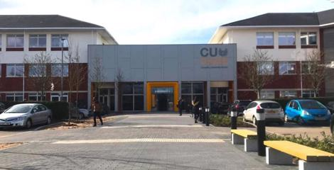

Direct Quote from
www.coventry.ac.uk
CU Coventry, part of the Coventry University Group, offers a style of education which is flexible and designed to fit around your life. Choose from a wide range of career relevant courses and study at a pace that suits you. Students who study at CU Coventry benefit from a modern, forward-thinking higher education institution, reinforced by the quality and reputation of Coventry University.
 Joshua Killen is a Foundation year student at CU Coventry studying Digital Technologies.
Joshua Killen is a Foundation year student at CU Coventry studying Digital Technologies.
Interested in computers and physics from a young age,
he has been studying the subjects ever since,
with the hopes of entering a career in cybersecurity.
Contact Details
@:killenj@cu.coventry.ac.uk